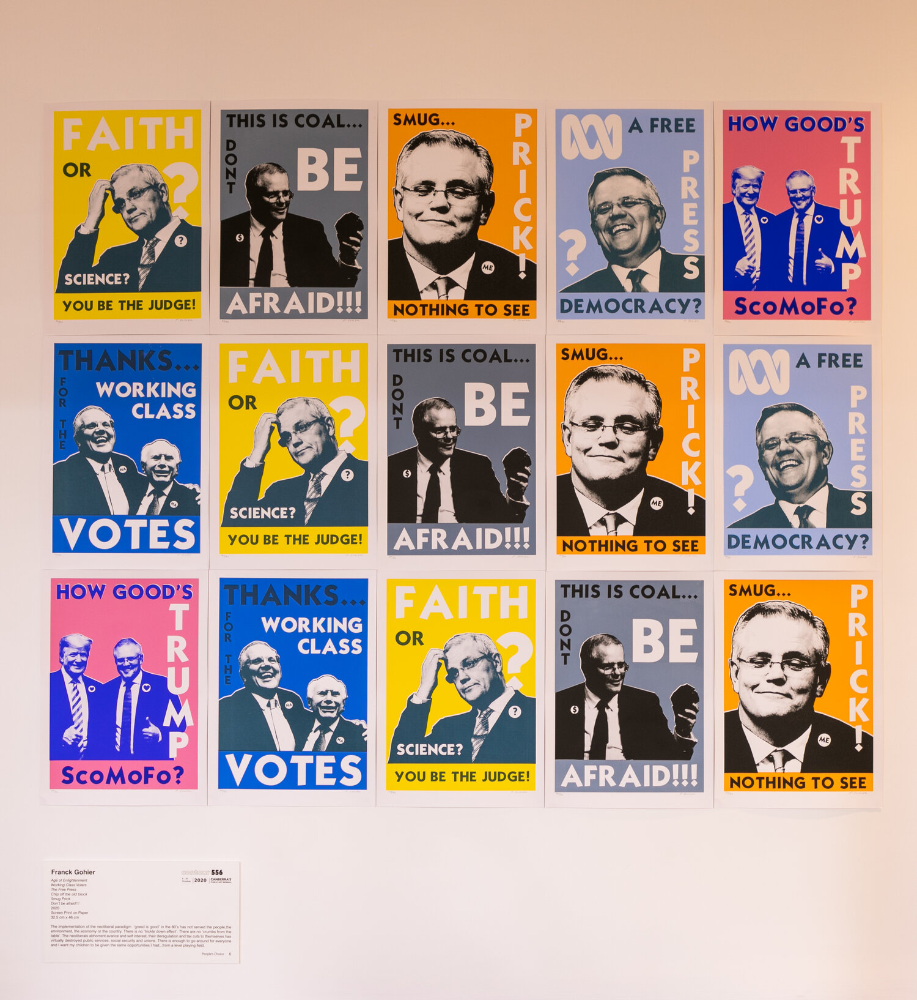
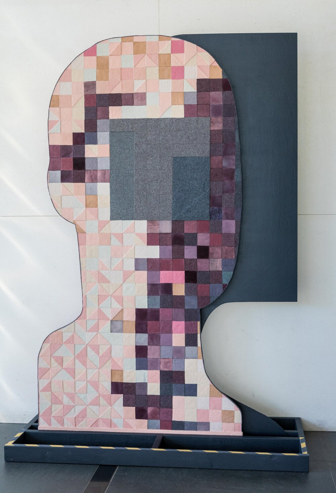
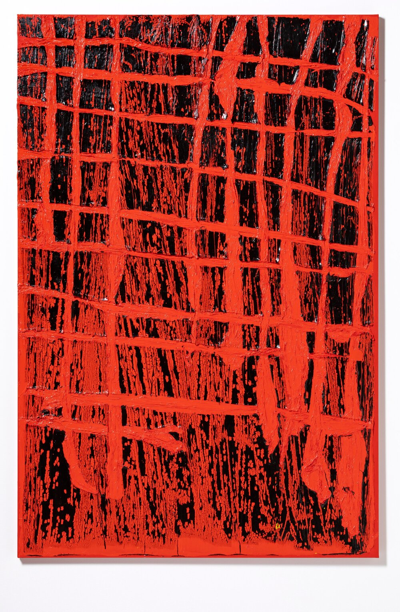

The 4th edition of contour556 will return this October and it will be bigger and better than ever.
The 2022 festival will be renamed the Canberra Art Biennale and will expand to the National Arboretum, with the University of Canberra further maintaining and building our presence in Canberra's north and south, making it a great art event to look forward to
Louise Weaver’s multidisciplinary practice employs an assortment of media in the creation of both individual works and expansive sculptural installations that centre around the natural world. The paintings, sculptures and environments that Weaver creates interact with a broad range of themes. Weaver has a fascination with metamorphosis, cycles of growth and the intricacies of camouflage. Her work plays with these concepts and extends them into ideas surrounding artificiality,
transformation, social themes and feminism, underpinned by the enduring power of mythology, make-believe and memory. Highly propositional, her works are imaginative and exquisite objects, tableaux, constellations and fields for contemplation. Through the intricate traceries, patterns, webs and nets that appear and reappear throughout her practice, Weaver suggests a complex interconnected universe of fragile beauty that comprises things real and imagined, fleeting and eternal.
Here are some references
https://developer.mozilla.org/zh-CN/docs/Web/CSS/CSS_Flexible_Box_Layout/Basic_Concepts_of_Flexbox
https://www.w3schools.com/
https://css-tricks.com/snippets/css/complete-guide-grid/
https://www.contour556.com.au/2020
{kind=link}
{kind=link}
![ Franck Gohiers The implementation of the neoliberal paradigm 'greed is good' in the 80's has not served the people,the environment, the economy or the country. There is no 'trickle down effect'. There are no 'crumbs from the table'. The neoliberals abhorrent avarice and self interest, their deregulation and tax cuts to themselves has virtually destroyed public services, social security and unions. There is enough to go around for everyone and I want my children to be given the same opportunities I had...from a level playing field.](assets/img/FG+all+works+and+sign.jpeg){kind=link}
![ Mariana Del Castillo My installation considers issues pertinent to contour 556’s premise: to reflect on the social, cultural and political landscape of Canberra. I am creating a site-specific installation in the building foyer of 16 Marcus Clarke Street; a new space for Contour 556. The works will explore the profound disconnection between our political system and the citizen. The collection of data, the surveillance state and real time monitoring has created the Citizen Subject. The works will be mixed media, alongside stitching and painting.](assets/img/M+del+Castillo+subject+felt+4.jpeg){kind=link}
![ Louise Weaver Louise Weaver’s multidisciplinary practice employs an assortment of media in the creation of both individual works and expansive sculptural installations that centre around the natural world. The paintings, sculptures and environments that Weaver creates interact with a broad range of themes. Weaver has a fascination with metamorphosis, cycles of growth and the intricacies of camouflage. Her work plays with these concepts and extends them into ideas surrounding artificiality, transformation, social themes and feminism, underpinned by the enduring power of mythology, make-believe and memory. Highly propositional, her works are imaginative and exquisite objects, tableaux, constellations and fields for contemplation. Through the intricate traceries, patterns, webs and nets that appear and reappear throughout her practice, Weaver suggests a complex interconnected universe of fragile beauty that comprises things real and imagined, fleeting and eternal.](assets/img/Behind+the+Scenes.jpeg){kind=link}
{kind=link}